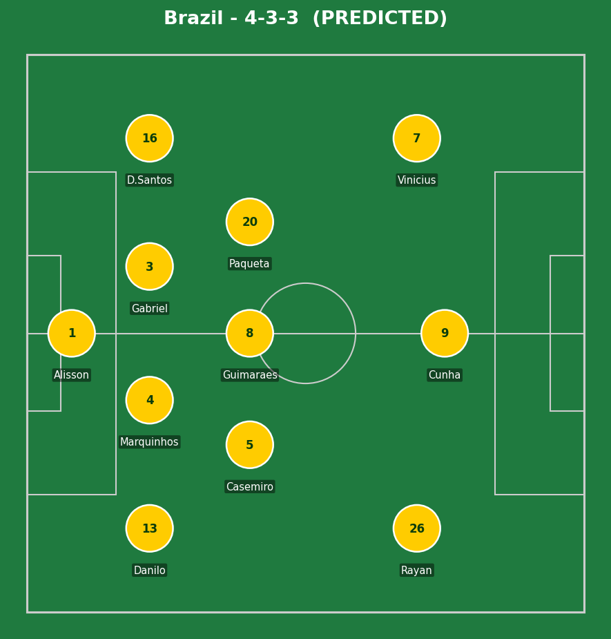
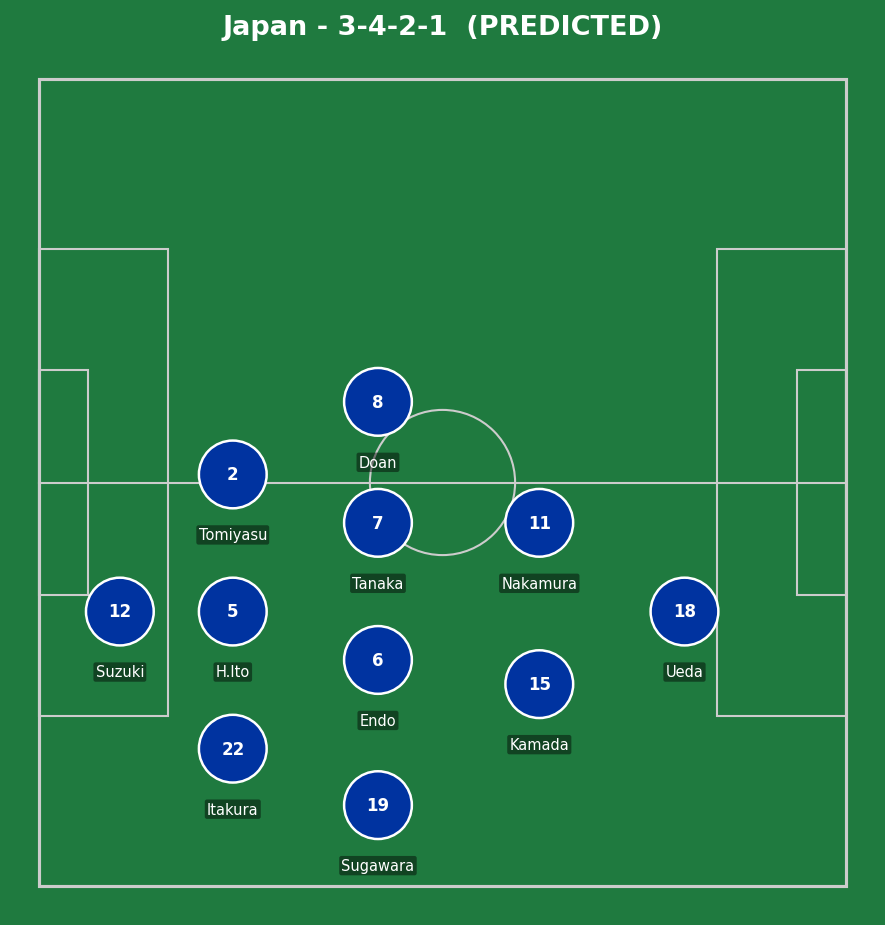
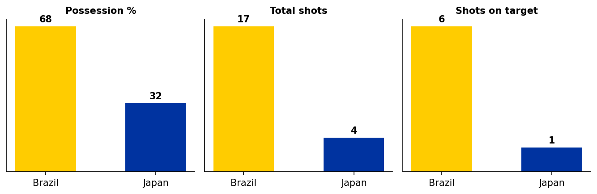

Straight knockout, no second chances - lose and you're out, with extra time and penalties if level after 90. Brazil arrive having found their rhythm late, scoring six without reply across their last two group games (Haiti, Scotland) after an underwhelming opening draw with Morocco. Vinicius Junior has scored in every single group game - just the fifth player in World Cup history to manage that, and in each of the previous four instances (Jairzinho 1970, Romario 1994, Ronaldo and Rivaldo 2002), Brazil went on to win the title that year.
Japan finished second in Group F unbeaten - a 2-2 draw with the Netherlands, a 4-0 win over Tunisia, and a 1-1 draw with Sweden. They've lost only twice in 28 internationals, and the psychological weight of that October friendly win over Brazil (coming back from 2-0 down to win 3-2) is a real, recent data point - even if knockout football carries a different intensity entirely.


Brazil (4-3-3): Alisson; Danilo, Marquinhos, Gabriel, D. Santos; Casemiro, Guimaraes, Paqueta; Rayan, Cunha, Vinicius Jr. Japan (3-4-2-1): Suzuki; Itakura, H. Ito, Tomiyasu; Sugawara, Endo (c), Tanaka, Doan; Kamada, Nakamura; Ueda. Neither lineup is confirmed yet - Raphinha (hamstring) is ruled out for Brazil with Rayan stepping in; Kubo (knee) is considered unlikely for Japan despite being named in the squad.
Japan's identity under Moriyasu has been settled and unchanged since 2024 - a deep, compact 3-4-2-1 that prioritizes positional discipline over individual risk, springing forward in fast, well-rehearsed vertical sequences. Their entire defensive approach is built around denying clean crosses and keeping disciplined covering lines against exactly the kind of inverted wingers (Vinicius cutting in from the left) that Brazil possess.
Brazil's biggest tactical risk is the platform underneath the front three - if Danilo and Douglas Santos push too far forward chasing width, Japan's quick transitions (built on smart off-the-ball movement and central overloads) could isolate Marquinhos and Gabriel against numbers. Brazil's centre-backs will need genuinely sharp game management, not just individual quality, to avoid exactly the kind of October scenario that saw them concede three.
Key tactical question: who actually wants the ball? Both sides are arguably at their most dangerous in transition rather than with sustained possession - if neither side is desperate to dictate tempo, this risks becoming a cagey, even contest that suits Japan's patient, opportunistic approach far more than it suits Brazil's superior individual talent.
Neymar's return from injury is the storyline that looms over this entire match without necessarily needing to start it - he appeared as a substitute against Scotland, and with the tournament now in knockout territory, his introduction at any sign of Brazilian struggle would be an enormous psychological and technical boost, not to mention finally setting up a genuine chance at one last World Cup moment in what's likely his final tournament.
Japan's bench is light on a like-for-like difference-maker with Kubo doubtful, but their squad continuity and tactical discipline mean fresh legs late on (rather than a single match-winning substitute) are more likely to be how they'd manage a tight scoreline.

Modelled from current tournament form on both sides - Brazil's individual quality projects a clear edge, but Japan's discipline and recent head-to-head result mean these numbers come with real uncertainty attached.
Brazil's individual quality, particularly Vinicius Junior's current form, should be enough across 90 minutes - but the recent head-to-head, Japan's defensive discipline, and the real risk of a cagey, transition-heavy contest mean this is genuinely closer than the squad-quality gap alone would suggest. A knockout match against a side with nothing to fear and a recent win already on the board is exactly the kind of fixture that produces an upset.
Most likely scorers: Vinicius Junior or Matheus Cunha for Brazil; Ayase Ueda for Japan, given his current scoring form and Japan's reliance on his hold-up play to launch their transitions.
Statistical/tactical projection, not a certainty - will update with confirmed lineups, live events, and the final result as the match unfolds today.
💬 Reactions & Comments